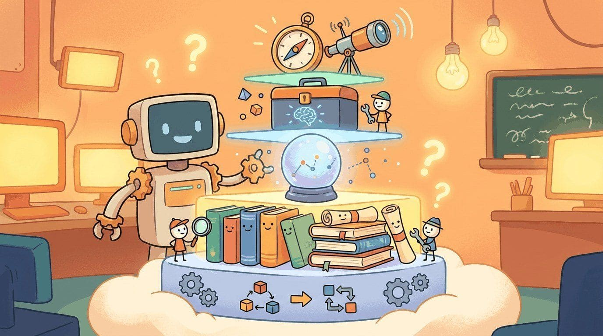

"An agent is a loop with permission to act. Most of the work is defining the loop. The rest is defining the permission."
Pip, Stack-Building AI Agent
Part VI built agents: planning, tool use, multi-agent coordination, memory, and the protocols (MCP, A2A, AG-UI) that let agents talk to tools, to each other, and to users. This chapter is the toolbox: the orchestration frameworks (LangGraph, CrewAI, AutoGen, smolagents, PydanticAI), the new agent-native protocols, and the eval harnesses (SWE-bench, WebArena, SWE-Lancer) that measure whether an agent actually finishes the task.
If you want one stack that scales from a single-agent toy to a multi-agent system:
pip install langgraph anthropicLangGraph is the graph-based agent runtime from the LangChain team; combined with a frontier LLM it covers ~80 percent of the patterns in Part VI. For function-calling-heavy structured agents, swap in PydanticAI.
Sections in This Chapter
- 30.1 Platforms Agentic systems run on top of LLM API platforms (Chapter 16) plus a new layer: agent-native protocols and runtimes that did not exist as standardized infrastructure before 2024.
- 30.2 Libraries & Frameworks Agents are LLM-powered programs that can use tools to accomplish tasks.
- 30.3 Datasets & Benchmarks Agent benchmarks have to test something that traditional NLP benchmarks do not: whether the system can complete an actual multi-step task with side effects.
- 30.4 Models Agentic workloads put unusual pressure on models.
- 30.5 External Reading & Communities Agentic literature is the youngest in this book.
What Comes Next
Part VII turns to multimodal generation: image, video, audio, and music models. Chapter 33 closes Part VII with the multimodal toolbox. Continue to Chapter 31: Embeddings, Vector Databases & Semantic Search.